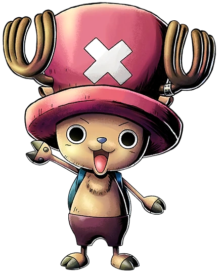

Quem é Chopper
Chopper era originalmente uma rena com a pequena esquisitice de um nariz azul que motivou outra rena a tratá-lo como uma pária (sempre o fazendo seguir o rebanho atrás de longe). Porém, quando a jovem rena comeu a Hito Hito no Mi, ele foi até mais afastado do seu rebanho (e com o aumento na inteligência concedida pela fruta, agora muito ciente disso) e foi abandonado. Infelizmente para Chopper, suas tentativas em comunicar com os humanos na "Drum Island" demonstraram ser desastrosas. Ele era atirado por aldeãos que o confundiram com o Abominável Homem das Neves. Afortunadamente, entretanto, ele foi salvo pelo curandeiro Dr. Hiruluk (Hiriluk na versão inglesa) que o deu um nome e o adotou como seu amigo e 'assistente'. Embora seus feitos fossem de valor médico duvidoso, o Dr. Hiruluk se tornou o modelo exemplar do Chopper. Hiruluk ensinou Chopper a sua filosofia de vida (que todas as doenças podiam ser curadas) e sua forte fé na Bandeira Pirata como um símbolo de força contra toda probabilidade. Os dois foram de casa em casa, administrando suas "curas" em um país onde todos os médicos não autorizados pelo Rei Wapol foram banidos.
Quando a saúde de Hiruluk piorou, Chopper achou que ele tinha pegado um resfriado de novo porque o velho não quis que Chopper o visse morrer. Mas uma vez que Chopper descobriu o que estava acontecendo, ele estava determinado a achar alguma coisa para curar seu mentor, seu único amigo. Em pouco tempo ele achou o que estava procurando: um tipo especial de cogumelo com uma caveira e ossos cruzados de forma destacada exibido no livro médico, desavisado do que aquele sinal significava medicamente devido ao louvor de piratas e a bandeira de pirata de Hiruluk. Lembrando que ele ouviu por acaso de alguns aldeãos que um "certo" tipo de cogumelo pode curar toda doença, Chopper rouba o livro médico favorito de Hiruluk para achar o cogumelo milagroso. A jornada árdua de Chopper foi um sucesso, embora ele arriscou sua vida e sofreu muitos ferimentos, como por exemplo, um chifre esquerdo quebrado.
Hiruluk, estupefato com lágrimas de gratidão, comeu o cogumelo para mostrar seu amor e apreciação por Chopper, mas Chopper descobriria mais tarde pela Dr. Kureha que ele deu a Dr. Hiruluk uma dose fatal de veneno. Mas Hiruluk não viveria muito mais tempo de qualquer jeito. Declarando que ele teve uma maravilhosa vida (na dublagem inglesa ele declara que é um médico), ele comete suicídio explodindo a si mesmo do lado de fora do Castelo de Drum (antes de ser morto pelo veneno por causa do Chopper). Como último desejo de Hiruluk, a Dr. Kureha (a última médica restante que não pertencia ao Rei Wapol) adotou Chopper e o ensinou a 'verdadeira' medicina pelos próximos 6 anos. Chopper trabalhu tanto quanto podia para se tornar um médico como seu ídolo, Hiruluk.
Porém, a vida isolada de Chopper no Castelo de Drum (que ele e a Dr. Kureha anexaram depois que o Rei Wapol fugiu) um dia terminaria com a chegada de Monkey D. Luffy e sua tripulação pirata. Chopper, naturalmente desconfiado dos humanos, não estava contente especialmente por Luffy e Sanji decidirem cozinhá-lo e comê-lo. Mas quando Chopper os mostrou seus poderes médicos e suas habilidades de luta contra as tropas enviadas pelo Rei Wapol, Luffy o ofereceu (forçou) a posição (ainda vaga) de Médico do Navio na sua tripulação. Enquanto Chopper negava a ir, ele lembrou do Dr. Hiruluk desejando que ele navegasse nos mares para ver o mundo da sua forma e com seu desejo de ampliar seus horizontes médicos, ele decide se juntar a Luffy e sua tripulação. Fugindo do castelo com os Piratas do Chapéu de Palha, Chopper recebeu uma despedida de proporções gigantes: Kureha transformou a neve em flores de cerejeira, exatamente o que Hiruluk pesquisou por 30 anos que iria um dia, curar as pessoas de Drum de sua "doença do coração," passou para a Dr. Kureha como um do seu último pedido antes da morte. Superado com lágrimas, Chopper adorou a despedida da sua terra natal e mentores, partindo para o mar pela primeira vez na sua vida.
Chopper foi originalmente abandonado por sua família por ser diferente e com humanos foi a mesma coisa. Os primeiros amigos de Chopper (exceto as pessoas que o educaram) foram os Chapéus de Palha que o esporam ao mundo.
Como é a aparencia dele?

Na maior parte do tempo, Chopper é um híbrido de rena/humano do tamanho de uma criança. As habilidades de sua Akuma no Mi o permite mudar de aparência dependendo da situação. O chifre esquerdo de Chopper tem uma chapa de metal que o cobre o tempo todo, pois este se quebrou quando tentou encontrar o cogumelo, com o qual ele acreditava ser possível curar seu mestre Hiriluk. Além disso, Chopper tem uma característica fora do comum em relação as outras renas que é o nariz azul, enquanto as renas normais têm um preto. Como o estilo de Oda se desenvolveu, foi dado a Chopper uma aparência mais "chibi". Isto significa que quando está no seu Brain Point (Modo Cerebral) Chopper tem uma cabeça e olhos maiores.
O engraçado é que vários personagens de One Piece confundem-no com um "tanuki" (cão-guaxinim, frequentemente traduzido simplesmente como "guaxinim") ou com um "shika" (veado) enquanto está na sua forma Brain Point (Modo Cerebral). Quando essas confusões acontecem, Chopper demonstra irritação. Esta é uma brincadeira com a palavra parecida "tonakai", a palavra japonesa para rena, de onde é derivado o "Tony" no nome do Chopper. Sua forma Heavy Point (Modo Pesado) também é confundida com um gorila ou um abominável homem das neves.
Muitas das personagens femininas, como Porche, acham Chopper muito fofo.
Oda disse que usa a cor rosa para representar Chopper e seu olfato.
Personalidade dele
Chopper é inicialmente rotulado de monstro, levando-o ao ostracismo. Chopper é muito ingênuo e tende a acreditar em qualquer coisa que lhe é dita, até mesmo nas mentiras escandalosamente fictícias e exageradas de Usopp . Chopper adora ser elogiado e é incapaz de esconder seus sentimentos. Após o salto no tempo, ele abraça seu status porque quer ser um "monstro para Luffy".
Todas as recompensas do Chopper
- 1,000 Berries
- 100 Berries
- 50 Berries
Primeira recompensa
Recebeu uma recompensa de $50. O número é baixo porque o Governo Mundial acredita que ele é mascote da tripulação. Sua forma de monstro, que derrotou o agente da CP9, Kumadori, foi confundido com outra criatura.
Segunda recompensa
Por ser membro do bando, mesmo tendo aumentado sua recompensa o número permanece baixo, $100.
Terceira recompensa
Por ser membro do bando e ajudando em Onigashima, mesmo tendo aumentado sua recompensa o número permanece baixo, $1.000.
habilidades do Chopper
O poder da Fruta Humana-Humana do tipo Zoan fornece a Tony Tony Chopper a capacidade de se transformar em três formas: um humano, híbrido humano-rena ou sua forma padrão de rena . Além de suas transformações normais, Chopper desenvolveu uma droga que ele chama de Rumble Ball , que lhe permite quatro transformações adicionais para usar temporariamente. Embora os efeitos primários do rumble ball durem apenas três minutos, Chopper não pode consumir uma segunda bola por seis horas sem efeitos adversos, principalmente a perda de controle sobre suas transformações durante os três minutos de sua segunda Rumble Ball.
Se Chopper consumir três Rumble Balls em seis horas, ele cresce em proporções monstruosas e perde todo o autocontrole. Esta forma, conhecida como Monster Point, é extremamente poderosa, mas também tem o efeito adverso de drenar a força vital de Chopper. Após o timeskip de dois anos, Chopper é capaz de se transformar em seis formas sem uma rumble ball e pode usar uma rumble ball para controlar seu Monster Point.
Mais tarde, com a ajuda de seu inimigo e prisioneiro temporário Caesar Clown, Chopper foi capaz de melhorar a fórmula e prolongar os efeitos do Rumble Ball dez vezes para trinta minutos de cada vez. Como Chopper é um animal que comeu a Fruta Humano-Humana, ele pode conversar com outros animais e humanos